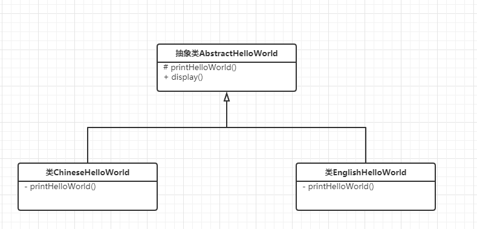
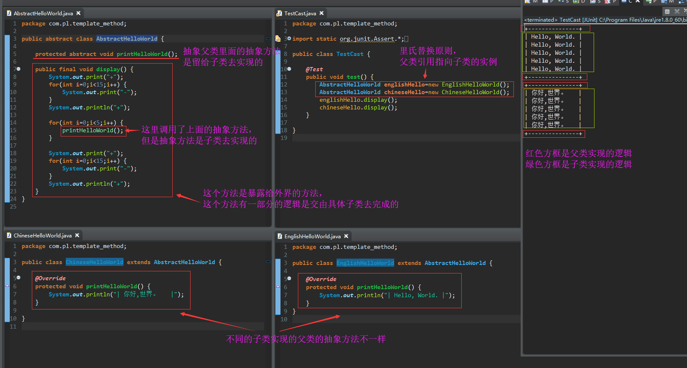

使用模板方法模式的一般性步骤
第一步：创建一个抽象类定义若干个抽象方法（具体的实现留待子类去实现），然后再做一个实现方法，实现方法里面调用了上面的抽象方法
第二步：创建抽象类的实现子类，实现了抽象类的抽象方法
第三步：创建抽象类的变量指向对应实现子类的实例，调用抽象类的实现方法
例子的UML图

具体例子

都有哪些框架使用了该设计模式
java.io.InputStream类使用类模板方法模式